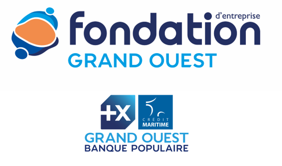

Habitat Léger Insolite
Hublow est un projet porté par l'association Passe‑Coque dans sa phase de faisabilité.
Dans une approche écologique et "Low Tech", Hublow a pour objectif de proposer une nouvelle offre
d'habitat léger insolite par le surcyclage de vieux voiliers abandonnés.
Hublow souhaite ainsi apporter une réponse innovante, écologique et pratique à des problématiques
de logement et d'attractivité sur le territoire du Morbihan.
